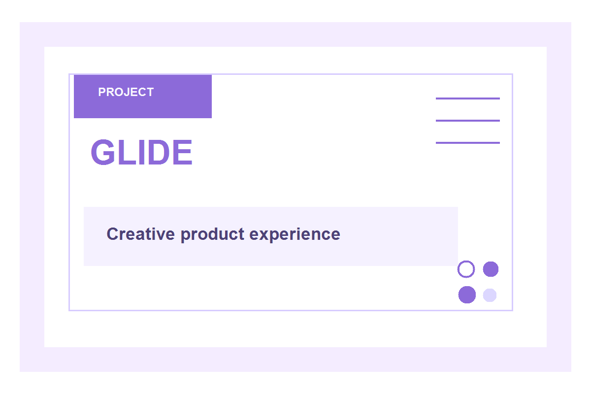
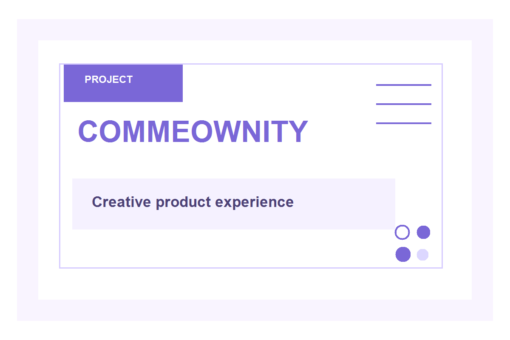
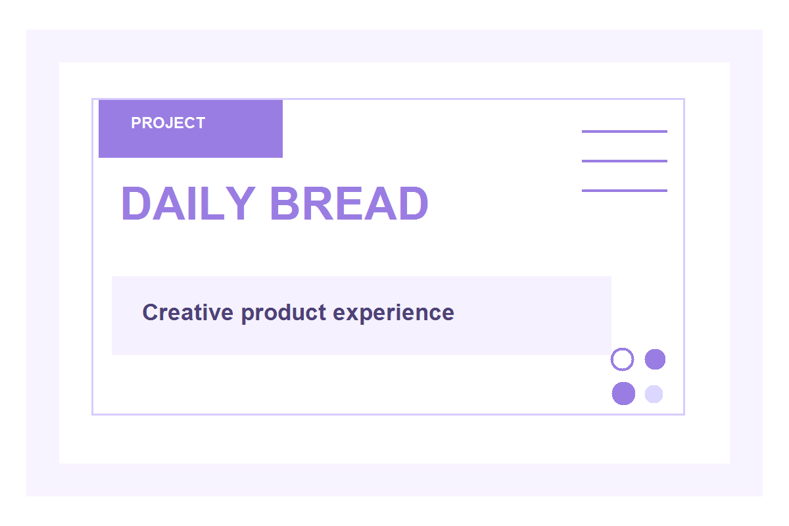
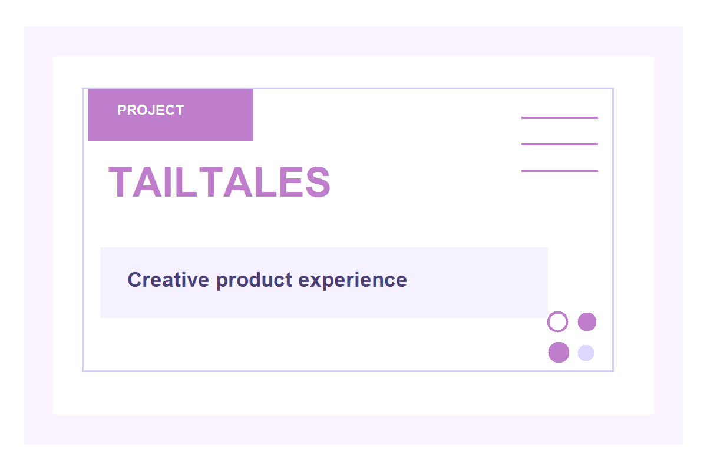
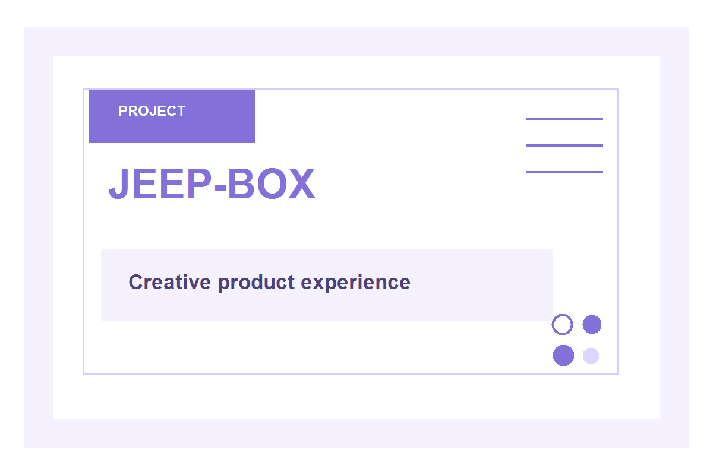

Pitch Deck
Glide
A startup-style pitch project that highlights innovation, product vision, and problem-solving through a compelling presentation.
Aspiring Project Manager • Full Stack Developer
I’m 21 years old and an aspiring Project Manager with a strong foundation in leadership, coordination, creativity, and innovation. I enjoy turning ideas into meaningful digital experiences and bringing people together to build something useful, impactful, and memorable.

I am a young professional with a passion for leadership, coordination, creativity, and innovation. I love planning, guiding ideas from concept to execution, and collaborating with people who want to create meaningful projects that make an impact. My strengths lie in bringing structure to ideas, inspiring teamwork, and transforming creative thinking into real-world results.
As an aspiring Project Manager and Full Stack Developer, I aim to combine technical skills with strategic thinking. I enjoy developing digital solutions while also understanding how projects move forward through communication, adaptability, and strong decision-making.
From student leadership roles to project-based experiences, I have learned the value of initiative, accountability, and collaboration. I believe every project is an opportunity to create value, solve problems, and help people connect more meaningfully through thoughtful design and execution.

A startup-style pitch project that highlights innovation, product vision, and problem-solving through a compelling presentation.

A concept-driven project centered on user experience and meaningful digital interaction, blending creativity with practical design thinking.

A collaborative community idea built around connection, accessibility, and digitally enabled participation.

A community-centered concept that supports better resource sharing and improved everyday experiences through thoughtful digital systems.

An engaging idea that merges storytelling, interaction, and user-centered design to create meaningful digital engagement.

A practical and creative solution that explores product utility, system thinking, and user value in a modern context.